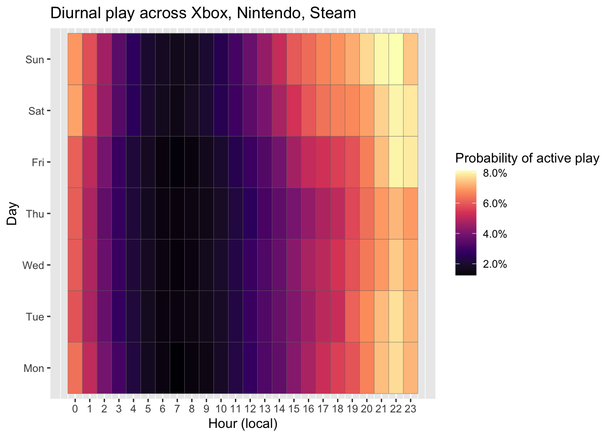

![]()

A multi-platform dataset of digital trace data from video games
Introduction
Scientists widely agree that digital trace data—behavioral logs automatically collected by online platforms—are necessary to understand the nuances of technology use (Freelon 2014; Griffioen et al. 2020), and thereby its effects on varied outcomes such as health, wellbeing, academic achievement, and cognition (Burgess et al., n.d.). Users struggle to accurately self-report even high-level measures of use (e.g., total screentime) (Parry et al. 2021), and these high-level metrics are generally poorly predictive of outcomes (Orben 2019). To systematically understand the effects of technology, we therefore need data that captures nuanced factors we now know to be more impactful. Beyond screentime, the next layer of granularity includes the frequency, duration, and time of day of each session; the specific content engaged; and the trajectory of user behavior over time. Digital trace data is well-suited to deliver these elements.
As one of the world’s foremost leisure activities among youth and adults alike (Ofcom 2023; Entertainment Software Association 2024), video games are a key medium for which digital trace data is needed. Digital trace data has been widely implemented in many studies of social media and wellbeing, but in studies of video games has been much more limited. Trace data in video games primarily falls under the field of game analytics or game data science, but (1) the majority of these studies involve the use of proprietary data that is not publicly shared, and (2) the focus of this field tends to be more on player behavior metrics with clear industry value .
i In part, this is a function of availability: video game consoles are restrictive and typically do not allow third party tracking software; most video game platforms do not have a 1-click “download my data” option offered by several social media platforms (e.g., TikTok, Instagram); and there are thousands of individual games whose data may be relevant for a given study or population.
Where trace data has been used in video games studies, it has largely been limited to a single game (Vuorre et al. 2022; Johannes, Vuorre, and Przybylski 2021; Larrieu et al. 2023; Perry et al. 2018) or platform (Ballou et al. 2023, 2025) per user. Previous studies that secured video game telemetry was widely limited to a single game or a single gaming platform. However, as the data we present here shows, players commonly use a wide range of games and platforms. Capturing just one game or one gaming platform among potentially many that the person may be engaging with—and affected by. For example, a player may
Digital trace data on its own is limited however; without additional information from users about how their lives are going, we will struggle to understand the causal network. In the field of game analytics, a number of studies have digital trace data to explore social networks, We therefore see particular value in longitudinal studies that combine comprehensive digital trace data with repeated surveys, in both experimental and observational contexts. Ideally, surveys should be frequent enough to capture short-term effects (e.g., playing a game to recover from a stressful workday) and longer-term development (e.g., a pattern of increasing play over time displacing sleep).
Overview
This paper addresses this need for longitudinal digital trace data across multiple gaming platforms. Here, we present a dataset consisting of 2.0K participants, 18.8K daily surveys, 6.9K surveys, and a total of 3.4M of gameplay distributed across 5.7M.
Digital trace data was sourced for five distinct platforms—Xbox, Nintendo, Steam, iOS, and Android—through distinct piplines detailed below.
The dataset is openly available at [LINK] under a CC0 license for unrestricted reuse.
highlight that data collection methods are preregistered
Method
Design
The study consisted of four stages (Figure 1).
Stage 1: Screening
In the first stage, we screened participants in order to find people aged 18-40 who (1) self-report playing video games, (2) self-report that at least 50% of their total video game play takes place on the platforms included in the study, and (3) were willing to link their gaming accounts to provide digital trace data. We screened participants from two panel sources: PureProfile and Prolific.
Participants were recruited under an initial set of ethnicity‐based quotas designed to mirror the general population’s demographic composition. After we reached approximately 50% of our target sample under quota constraints and found that further quota‐eligible recruits were scarce, we suspended the quotas for the remainder of data collection; all subsequent participants were enrolled on a first‐come, first‐served basis. Final sample characteristic reflect both quota‐driven and open‐enrollment phases (see below).
Stage 2: Account Linking
Participants who were deemed eligible during screening proceeded directly to an account linking survey wherein they provided details of the gaming platforms they actively use. For UK participants, this includes Nintendo Switch, Steam, Android and iOS. For US participants, this includes the same four alongside Xbox. Details of how participants linked each type of account are shown in Table 1.
| Platform | Data Source | Account Linking Process | Type of Data Collected |
| Nintendo | Data-sharing agreements with Nintendo of America (US) and Nintendo of Europe (UK) | Participants share an identifier contained within a QR code on Nintendo web interface.1 Nintendo of America/Europe uses this identifier to retrieve gameplay data and share it with the research team. |
Session records (what game was played, at what time, for how long) for 1st party games (games published in whole or in part by Nintendo, but not by third party publishers such as Electronic Arts).2 |
| Xbox (US only) | Data-sharing agreement with Microsoft | Participants consent to data sharing by opting in to the study on Xbox Insiders3 with their Xbox account. Microsoft retrieved gameplay data for all consented accounts, and shares it with the research team in pseudonymized form. | Session records (what game was played, at what time, for how long). The name of the game replaced with a random persistent identifier for all third-party games (i.e., those not published by Xbox Game Studios), but genre(s) and age ratings are shared. |
| Steam | Custom web app (Gameplay.Science) | Participants sign up for Gameplay.Science (https://gameplay.science), an o pen-source platform for tracking Steam gameplay. Participants consent to have their gameplay data monitored for the duration of the study. Their Steam ID is authenticated using the official Steam authentication API (OpenID). | Incremental playtime per game (every hour, the total time spent playing during the previous hour) |
| iOS | iOS Screen Time Screenshots | In each biweekly survey, participants submitted screenshots from the built-in iOS Screen Time app. These show details of the previous 3 weeks’ of gaming app use (what games were played and for how long). Data was extracted using OCR. | Total weekly playtime per game (e.g., 2 hours on game X, 5 hours on game Y) |
| Android | Digital Wellbeing Screenshots | In each biweekly survey, participants submitted screenshots from the Digital Screen Time app, if available on their Android OS. These show details of the previous 3 weeks’ of phone use (what app categories are used and for how long). Data was extracted using OCR. | Total weekly playtime per game (e.g., 2 hours on game X, 5 hours on game Y) |
Stage 3: Account Validation
After players completed the account linking process, we checked each account for evidence of valid gaming—specifically, records of active gameplay sessions on one or more of Steam, Xbox, and Nintendo within the 2 weeks before survey completion. Participants who did not have recent, valid telemetry on any console platform were excluded from the rest of the study.
Stage 4: Surveys

Eligible participants were invited to complete 6 waves of biweekly surveys, one every two weeks (Figure 2). US participants were additionally invited to complete daily surveys for 30 days, concurrently with the first biweekly surveys. During waves 1, 3, and 5, a cognitive task was also administered within the biweekly survey.
Daily survey links were sent every day at 2pm local time for the participant and remained available until 3am. Biweekly survey links were sent every second week from the first day of the study at 12pm and remained available for 96 hours.
Participants

Our final sample consists of 2551 qualified participants, selected from a pool of 34229 screened participants. Of the 2551 with recent telemetry, 1973 also completed at least one survey.
Our screening sample was roughly representative of the general population of the US and UK by ethnicity (Figure 3) and gender identity: Man (16728, 47.7%); Other (535, 1.2%); Woman (16862, 51.1%).
The sample of qualified participants is less representative of the general population, containing more men and non-binary participants: Man (1659, 65%); Other (158, 6.2%); Woman (734, 28.8%), as well as fewer black participants (Figure 3). However, the demographics of console video game players are not well-understood; it is likely that our sample more closely represents this population than the general population.
Ethics and Compensation
This study received ethical approval from the Social Sciences and Humanities Inter-Divisional Research Ethics Committee at the University of Oxford (OII_CIA_23_107). All participants provided informed consent at the start of the study, including consent to their data being shared openly for reanalysis.
Prolific participants were paid at a rate of £12/hour for all study components, which equates to: £0.20 for a 1-minute screening, £2 for the 10-minute intake survey (plus £5 for linking at least one account with recent data), £0.80 for each 4-minute daily survey, and £2 for each 10-minute biweekly survey. Participants received £10 bonus payments for completing at least 24 out of 30 daily surveys and/or 5 out of 6 biweekly surveys.
Deviations from Preregistration
We made several deviations from our preregistration to ensure we could recruit enough high-quality participants to meet our sample size goals. In our view, none are so severe enough to threaten the validity of the study. Deviations are summarised in Table 2.
| Preregistered | Actual | Justification for Deviation |
|---|---|---|
| All participants sourced from PureProfile | Participants sourced from both PureProfile and Prolific | Exhausted PureProfile participant pool before reaching required sample size |
| Screening sample would be nationally representative by ethnicity and gender | Approximately 50% of screening was done using quotas for national representativeness by ethnicity and gender; all subsequent sampling used convenience sampling with no quotas | Exhausted participant pools of smaller demographic categories on both Prolific and PureProfile before reaching required sample size |
| Sample consists of participants aged 18–30 in the US and 18–75 in the UK | Sample consists of participants aged 18-40 in both regions | (1) Unable to recruit enough participants in the US aged 18–30; (2) near-zero qualification rates from UK adults over 50; (3) desire for results from both regions to be more easily comparable |
| To qualify, ≥75% of a participant’s total gaming must take place on platforms included in the study (Xbox, Steam, Nintendo Switch) | To qualify, ≥50% of a participant’s total gaming must take place on platforms included in the study (Xbox, Steam, Nintendo Switch) | Low rates of study qualification at 75% threshold, in large part due to substantial uncaptured Playstation play |
| Qualification contingent upon valid telemetry within last 7 days | Qualification contingent upon valid telemetry within last 14 days | Feedback from participants indicating that play during a 7-day period was subject to too many fluctuations (e.g., a busy workweek) |
| Daily and biweekly surveys sent at 7pm local time | Daily and biweekly surveys sent at 2pm local time | Feedback from participants indicating that evening plans often interfered with survey completion and thus adversely affected response rate |
| Session-level Android data captured via the ActivityWatch app | Daily-level Android data captured using screenshots of the Digital Wellbeing interface | Restrictions in PureProfile’s privacy policy preventing installation of 3rd party apps; technical challenges in supporting users with the installation and data export |
Demographic measures
We collected the following demographic variables:
- age
- gender
For all participants who were eligible based on self-reported video game play (but who did not always successfully linked accounts), we additionally collected the following
- ethnicity
- educational attainment
- employment status
- height and weight
- self-identified neurodivergence (e.g., ASD, ADHD, dyslexia)
- political party affiliation
- diagnosed neurodivergence
- marital status
- caretaking responsibilities (children, family members)
- postal geography (general area only; first three digits of the five-digit US ZIP Code; UK outward code)
Self-report measures
Trait or traitlike measures
| Construct | Measure | Example Item | Response Format |
|---|---|---|---|
| Chronotype | Munich Chronotype Questionnaire (Roenneberg, Wirz-Justice, and Merrow 2003) | I go to bed at… | Times and numbers of minutes |
| Big 5 Personality | BFI-2-XS (Soto and John 2017) | I am someone who…is compassionate, has a soft heart. | 5-pt Likert scale from 1 (Disagree strongly) to 5 (Agree strongly) |
| Player Trait Typology | Trojan Player Typology (Kahn et al. 2015) | It’s important to me to play with a tightly knit group. | 5-pt Likert scale from 1 (Strongly disagree) to 5 (Strongly agree) |
| Gaming Disorder Symptoms[^data-ms-4] | Gaming Disorder Test (Pontes et al. 2019) | In the past 3 months…I have had difficulties controlling my gaming activity. | 5-pt Likert scale from 1 (Never) to 5 (Very often) |
- [^data-ms-4]: Measured twice, at biweekly waves 1 and 6
-
Trait or traitlike measures assessed only once {#tbl-trait}
Daily measures
| Construct | Measure | Example Item | Response format |
| Basic psychological need satisfaction and frustration - life in general | Basic Psychological Need Satisfaction and Frustration Scale (Chen et al. 2015), brief version (Martela and Ryan 2024) | In the last 24 hours…I was able to do things I really want and value in life. | 7-pt Likert scale from 1 (very strongly disagree) to 7 (very strongly agree) |
| Basic psychological need satisfaction and frustration - video games | Basic Needs in Games scale (Ballou et al. 2024), brief session-level version | In my most recent session of [X]…I felt disappointed with my performance. | 7-pt Likert scale from 1 (very strongly disagree) to 7 (very strongly agree) |
| Life satisfaction | Cantril Self-anchoring Scale (Cantril 1965), daily version | I was satisfied with my life today. | Visual Analogue Scale from 1 (Strongly disagree) to 100 (Strongly agree) |
| Affective valence | ad hoc | How are you feeling right now? | Visual Analogue Scale from 1 (very bad) to 100 (very good) |
| Sleep Quality | Sleep quality item (Item 9) from Consensus Sleep Diary (Carney et al. 2012) | How do you rate the quality of your sleep? | 5-pt Likert scale from 1 (very poor) to 5 (very good) |
| Stressors | Daily Inventory of Stressful Events (Almeida, Wethington, and Kessler 2002), modified for digital delivery | [In the last 24 hours], what kinds of stressful event(s) occurred? [Participant selects among 7 options, including e.g. argument or disagreement] | Yes/No, followed by a 4-pt Likert scale from 1 (Not at all stressful) to 4 (Very stressful) |
| Self-reported displacement | ad hoc | Think back to your most recent gaming session. If you hadn’t played a game, what would you most likely have done instead? | Open response |
Biweekly measures
| Construct | Measure | Example Item | Response format |
| General Mental Wellbeing | Warwick-Edinburgh Mental Wellbeing Scale (Tennant et al. 2007) | I’ve been feeling optimistic about the future | 5-pt Likert scale from 1 (none of the time) to 5 (all of the time) |
| Depression symptoms | PROMIS Short Form 8a Adult Depression Scale (Pilkonis et al. 2011) | In the past 7 days…I felt that I had nothing to look forward to. | 5-pt Likert scale from 1 (Never) to 5 (Always) |
| Life satisfaction | Cantril Self-anchoring Scale (Cantril 1965) | On which step of [a ladder from 0 to 10 representing the best possible life] would you say you personally feel you stood over the past two weeks? | 10-pt unlabeled scale from 0 to 10 |
| Basic psychological need satisfaction and frustration - video games | Basic Needs in Games scale (Ballou et al. 2024), gaming in general version | When playing video games during the last 2 weeks…I could play in the way I wanted. | 7-pt Likert scale from 1 (very strongly disagree) to 7 (very strongly agree) |
| Subjective displacement | ad hoc | Over the last two weeks, to what extent has the time you spend playing video games influenced the following areas of your life? […] Work/school performance | 7-pt Likert scale from 1 (greatly interfered) to 7 (greatly supported) |
Monthly measures
| Construct | Measure | Example Item | Response format |
| Sleep quality | Pittsburgh Sleep Quality Index (Buysse et al. 1989) | During the past month, what time have you usually gotten up in the morning? | Various |
| Daytime sleepiness | Epworth Sleepiness Scale (Johns 1991) | How likely are you to doze off or fall asleep in the following situations, in comparison to feeling just tired? […] Watching TV | 4-pt Likert scale from 1 (No chance of dozing) to 4 (High chance of dozing) |
| Harms and benefits of gaming | 2 free text questions | Do you feel that gaming is sometimes a problem for you? Please describe. | Open text |
Self-reported play
Social context of play: Participants reported which types of social play they engaged in during the last 24 hours (single-player games only, multiplayer with real-world friends, multiplayer with online-only friends, multiplayer with strangers). Participants could select more than one option.
Self-reported Playtime: In each biweekly survey, participants estimated the time they spent playing games on platforms they had linked during the study (e.g., excluding other platforms such as Playstation) in each of the following periods: last 24 hours, last 7 days, and last 14 days.
Self-reported recent sessions: In each biweekly survey, participants reported details of at least 1 and up to 3 of their most recent gaming sessions (game, date, and start/end time).
Digital Trace Data
As described above, we collected video game play data from five platforms: Xbox, Nintendo Switch, Steam, iOS, and Android (full details in Table 1). To recap, on Xbox and Nintendo, we have session-level data, characterized by the following fields: a game ID (Xbox) or title (Nintendo), a start and end time, and genre(s). On Steam we have hourly aggregates - every hour, how much time people spent playing for all games they played in that hour. On iOS and Android, we have daily aggregates - every day, how much time people spent playing each game. We describe each platform in more detail below. For concision, we do not repeat the details of Table 1 in here, but direct readers to that table or our supplementary materials for the exact variables in each platform’s trace data.
All telemetry timestamps are stored as UTC, but can be converted to the participant’s local time using the local_timezone variable.
Executive Function
TODO
Time Use
TODO
Data Quality Checks
We implemented a variety of data quality checks.
- In each daily and biweekly survey, one item from the BANGS (daily) and BPNSFS (biweekly) was duplicated to assess response consistency (Meade and Craig 2012); participants whose responses to the two identical items differed by more than one scale point were flagged for potential careless responding.
- In the telemetry, we use several heuristics to identify potential unreliable sessions: sessions beginning or ending in the future (indicative of clock manipulation or other errors), sessions longer than 12 hours long, 3 or more games being played simultaneously [TODO: other heuristics]
- In the time use, we flag any cases with fewer than 5 distinct activities logged in a day, or that are missing any
Missingness
TODO - figure
TODO - text
Dataset
Here we visualize key aspects of the data to provide an overview of its contents and properties.
Figure 4 compares the average self-reported distribution of play across platforms to the distribution in our digital trace data capture. It is vital to note that the self-report data not be treated as ground truth: we have good evidence that people’s self-reports of media use are inaccurate (Kahn, Ratan, and Williams 2014; Parry et al. 2021), with some previous work finding systemic overestimation of video game play (Johannes, Vuorre, and Przybylski 2021). Nonetheless, it is likely that some portion of player’s true gaming is systematically uncaptured, due to factors such as missing platforms (e.g., Playstation), missing titles (e.g., Nintendo third party), or player privacy settings (e.g., playing in invisible mode; setting certain games to private on Steam).
Warning
I’m halfway through making changes to the stacked bar chart preprocessing, ignore the actual values.

In Figure 5, we visualize the distribution of play across days and times. As expected, we find that the likelihood of play peaks on weekends from 8-11pm, and is lowest in the early morning.

Finally, ?@fig-case-study descriptively visualizes three participants’ (in the 25th, 50th, and 75th percentiles of playtime) playtime and wellbeing throughout the study.
Discussion
We believe this dataset has potential to address a wide variety of common research questions in the field.
Some of these questions will be addressed in forthcoming registered reports: specifically, we have plans to test (1) key hypotheses from the Basic Needs in Games model (Ballou and Deterding 2024) about how gaming relates to basic psychological needs over time, (2) the relationship between late-night gaming and sleep, and (3) the relationship between playtime in different genres and wellbeing.
Nonetheless, the richness of this data means that researchers can explore numerous other questions (or, indeed, conduct and compare alternative analysis approaches to the above questions). To stimulate ideas, we present a few questions we think the data are well-suited to answering.
How do seasons and weather impact playtime? Because we capture time-stamped play sessions alongside participants’ geographic locations, researchers can merge in high‐resolution weather and daylight data to examine how environmental factors causally influence gaming behavior. Causal inference techniques such as inverse probability weighting can enable precise estimates of how, when, and how much people play in response to seasonal and meteorological changes. By quantifying these effects, researchers can better distinguish weather‐related demand from other drivers (like work schedules or weekend routines), improving the precision of studies on gaming’s impact on wellbeing, motivation, and cognition.
How do neurotypical and neurodiverse players differ in their gaming behavior? Using the neurodivergence data we collected (which includes, for example, 432 participants who identify as having autism and 578 who identify as having ADHD), researchers can. Neurodiversity in games has regularly been studied in the context of specific games and with qualitative methods
Accuracy of self-reported data - inference from other papers
We encourage researchers from a wide range of disciplines to explore these or other questions using the data we present, which is freely available for reuse under a CC0 license.
Limitations
While this dataset represents a substantial step forward in holistic coverage of video game play, it remains imperfect: we did not capture data on PlayStation (~19% of gaming market) or computer games played outside the Steam platform (~11% of gaming market); on Nintendo, we do not have access to third-party titles (42% of Nintendo play), and our coverage of smartphone play is limited by the difficulties and inconsistencies of screenshot-based donation and OCR retrieval.
We further are unable to identify idle time (when players have a game open but are not actively playing it) and account sharing (when players let friends or family use their account); some playtime values may therefore be overestimates of the person’s true playtime, though we are unable to say by how much.
Future Work
The trace data presented here is broad in scope but limited in granularity: we capture all gaming activity on a given platform, but not what happens within individual games. Prior work and theory make clear that in-game behaviors (e.g., what role a player adopts, whether they compete or cooperate, or how they perform in competitive modes) are critical determinants of player experience and thereby wellbeing (see e.g., Elson et al. (2014) for a review of how in-game contexts shape effects). This highlights a fundamental trade-off in digital trace research between breadth—how comprehensively play can be captured across platforms—and depth—the granularity of in-game behaviors and experiences. At present, our dataset emphasizes breadth, but we see strong potential in future study designs that combine platform-level telemetry with targeted in-game behavioral data to provide a more complete picture.
We also see strong potential in combining digital trace data with experimental designs that enable stronger causal inference—for example, randomizing players to single-player games only, or restricting play to certain times of day, to examine effects on social wellbeing or sleep. Previous researchers have noted a dearth of digital trace data-backed field experiments, while highlighting their potential (Stier et al. 2020): Trace data not only captures naturalistic gaming behavior but also allows researchers to assess substitution (what games or platforms participants switch to under intervention) and adherence (how closely they follow assigned play patterns).
Data Availability
All data, materials, and code related to this dataset are available on the Open Science Framework [TODO: LINK], and the data is archived on Zenodo [TODO: LINK].
References
Almeida, David M., Elaine Wethington, and Ronald C. Kessler. 2002. “The Daily Inventory of Stressful Events: An Interview-Based Approach for Measuring Daily Stressors.” Assessment 9 (1): 41–55. https://doi.org/10.1177/1073191102091006.
Ballou, Nick, Alena Denisova, Richard Ryan, C. Scott Rigby, and Sebastian Deterding. 2024. “The Basic Needs in Games Scale (BANGS): A New Tool for Investigating Positive and Negative Video Game Experiences.” International Journal of Human-Computer Studies 188 (August): 103289. https://doi.org/10.1016/j.ijhcs.2024.103289.
Ballou, Nick, and Sebastian Deterding. 2024. “The Basic Needs in Games Model of Video Game Play and Mental Health.” Interacting with Computers, October, iwae042. https://doi.org/10.1093/iwc/iwae042.
Ballou, Nick, Craig Sewall, Jack Ratcliffe, David Zendle, Laurissa Tokarchuk, and Sebastian Deterding. 2023. “Gaming and Wellbeing: A Panel Study of Objectively Tracked Playtime.” https://doi.org/10.17605/OSF.IO/EDTWN.
Ballou, Nick, Matti Vuorre, Thomas Hakman, and Andrew K Przybylski. 2025. “Perceived Value of Video Games, but Not Hours Played, Predicts Mental Well-Being in Casual Adult Nintendo Players.” Royal Society Open Science 12: 241174. https://doi.org/https://doi.org/10.1098/rsos.241174.
Burgess, Romana, Elizabeth Dolan, Neo Poon, Victoria Jenneson, Francesca Pontin, Torty Sivill, Michelle Morris, and Anya Skatova. n.d. “The Potential of Digital Footprint Data for Health & Wellbeing Research.” https://doi.org/10.31234/osf.io/9jgn2.
Buysse, Daniel J., Charles F. Reynolds, Timothy H. Monk, Susan R. Berman, and David J. Kupfer. 1989. “The Pittsburgh Sleep Quality Index: A New Instrument for Psychiatric Practice and Research.” Psychiatry Research 28 (2): 193–213. https://doi.org/10.1016/0165-1781(89)90047-4.
Cantril, Hadley. 1965. The Pattern of Human Concerns. Rutgers University Press.
Carney, Colleen E., Daniel J. Buysse, Sonia Ancoli-Israel, Jack D. Edinger, Andrew D. Krystal, Kenneth L. Lichstein, and Charles M. Morin. 2012. “The Consensus Sleep Diary: Standardizing Prospective Sleep Self-Monitoring.” Sleep 35 (2): 287–302. https://doi.org/10.5665/sleep.1642.
Chen, Beiwen, Maarten Vansteenkiste, Wim Beyers, Liesbet Boone, Edward L. Deci, Jolene Van der Kaap-Deeder, Bart Duriez, et al. 2015. “Basic Psychological Need Satisfaction, Need Frustration, and Need Strength Across Four Cultures.” Motivation and Emotion 39 (2): 216–36. https://doi.org/10.1007/s11031-014-9450-1.
Elson, Malte, Johannes Breuer, James D. Ivory, and Thorsten Quandt. 2014. “More Than Stories With Buttons: Narrative, Mechanics, and Context as Determinants of Player Experience in Digital Games: Narrative, Mechanics, and Context in Digital Games.” Journal of Communication 64 (3): 521–42. https://doi.org/10.1111/jcom.12096.
Entertainment Software Association. 2024. “2024 Essential Facts about the u.s. Video Game Industry.” Washington D.C. https://www.theesa.com/wp-content/uploads/2024/05/Essential-Facts-2024-FINAL.pdf.
Freelon, Deen. 2014. “On the Interpretation of Digital Trace Data in Communication and Social Computing Research.” Journal of Broadcasting & Electronic Media 58 (1): 59–75. https://doi.org/10.1080/08838151.2013.875018.
Griffioen, Nastasia, Marieke van Rooij, Anna Lichtwarck-Aschoff, and Isabela Granic. 2020. “Toward Improved Methods in Social Media Research.” Technology, Mind, and Behavior 1 (1). https://doi.org/10.1037/tmb0000005.
Johannes, Niklas, Matti Vuorre, and Andrew K. Przybylski. 2021. “Video Game Play Is Positively Correlated with Well-Being.” Royal Society Open Science 8 (2): rsos.202049, 202049. https://doi.org/10.1098/rsos.202049.
Johns, Murray W. 1991. “A New Method for Measuring Daytime Sleepiness: The Epworth Sleepiness Scale.” Sleep 14 (6): 540–45. https://doi.org/10.1093/sleep/14.6.540.
Kahn, Adam S., Rabindra Ratan, and Dmitri Williams. 2014. “Why We Distort in Self-Report: Predictors of Self-Report Errors in Video Game Play.” Journal of Computer-Mediated Communication 19 (4): 1010–23. https://doi.org/10.1111/jcc4.12056.
Kahn, Adam S., Cuihua Shen, Li Lu, Rabindra A. Ratan, Sean Coary, Jinghui Hou, Jingbo Meng, Joseph Osborn, and Dmitri Williams. 2015. “The Trojan Player Typology: A Cross-Genre, Cross-Cultural, Behaviorally Validated Scale of Video Game Play Motivations.” Computers in Human Behavior 49 (August): 354–61. https://doi.org/10.1016/j.chb.2015.03.018.
Larrieu, Maxime, Yoann Fombouchet, Joël Billieux, and Greg Decamps. 2023. “How Gaming Motives Affect the Reciprocal Relationships Between Video Game Use and Quality of Life: A Prospective Study Using Objective Playtime Indicators.” Computers in Human Behavior 147 (October): 107824. https://doi.org/10.1016/j.chb.2023.107824.
Martela, Frank, and Richard M. Ryan. 2024. “Assessing Autonomy, Competence, and Relatedness Briefly: Validating Single-Item Scales for Basic Psychological Need Satisfaction.” European Journal of Psychological Assessment, July, 1015–5759/a000846. https://doi.org/10.1027/1015-5759/a000846.
Meade, Adam W., and S. Bartholomew Craig. 2012. “Identifying Careless Responses in Survey Data.” Psychological Methods 17 (3): 437–55. https://doi.org/10.1037/a0028085.
Ofcom. 2023. “Online Nation 2023 Report.” https://www.ofcom.org.uk/siteassets/resources/documents/research-and-data/online-research/online-nation/2023/online-nation-2023-report.pdf?v=368355.
Orben, Amy. 2019. “Teens, Screens and Well-Being: An Improved Approach.” PhD thesis, University of Oxford. https://amyorben.com/uploads/thesis/.
Parry, Douglas A., Brittany I. Davidson, Craig J. R. Sewall, Jacob T. Fisher, Hannah Mieczkowski, and Daniel S. Quintana. 2021. “A Systematic Review and Meta-Analysis of Discrepancies Between Logged and Self-Reported Digital Media Use.” Nature Human Behaviour 5 (May): 1535–47. https://doi.org/10.1038/s41562-021-01117-5.
Perry, Ryan, Anders Drachen, Allison Kearney, Simone Kriglstein, Lennart E. Nacke, Rafet Sifa, Guenter Wallner, and Daniel Johnson. 2018. “Online-Only Friends, Real-Life Friends or Strangers? Differential Associations with Passion and Social Capital in Video Game Play.” Computers in Human Behavior 79 (February): 202–10. https://doi.org/10.1016/j.chb.2017.10.032.
Pilkonis, Paul A., Seung W. Choi, Steven P. Reise, Angela M. Stover, William T. Riley, David Cella, and PROMIS Cooperative Group. 2011. “Item Banks for Measuring Emotional Distress From the Patient-Reported Outcomes Measurement Information System (PROMIS®): Depression, Anxiety, and Anger.” Assessment 18 (3): 263–83. https://doi.org/10.1177/1073191111411667.
Pontes, Halley M., Bruno Schivinski, Cornelia Sindermann, Mei Li, Benjamin Becker, Min Zhou, and Christian Montag. 2019. “Measurement and Conceptualization of Gaming Disorder According to the World Health Organization Framework: The Development of the Gaming Disorder Test.” International Journal of Mental Health and Addiction 19 (June): 508528. https://doi.org/10.1007/s11469-019-00088-z.
Roenneberg, Till, Anna Wirz-Justice, and Martha Merrow. 2003. “Life Between Clocks: Daily Temporal Patterns of Human Chronotypes.” Journal of Biological Rhythms 18 (1): 80–90. https://doi.org/10.1177/0748730402239679.
Soto, Christopher J., and Oliver P. John. 2017. “Short and Extra-Short Forms of the Big Five Inventory2: The BFI-2-S and BFI-2-XS.” Journal of Research in Personality 68 (June): 69–81. https://doi.org/10.1016/j.jrp.2017.02.004.
Stier, Sebastian, Johannes Breuer, Pascal Siegers, and Kjerstin Thorson. 2020. “Integrating Survey Data and Digital Trace Data: Key Issues in Developing an Emerging Field.” Social Science Computer Review 38 (5): 503–16. https://doi.org/10.1177/0894439319843669.
Tennant, Ruth, Louise Hiller, Ruth Fishwick, Stephen Platt, Stephen Joseph, Scott Weich, Jane Parkinson, Jenny Secker, and Sarah Stewart-Brown. 2007. “The Warwick-Edinburgh Mental Well-Being Scale (WEMWBS): Development and UK Validation.” Health and Quality of Life Outcomes 5 (1): 63. https://doi.org/10.1186/1477-7525-5-63.
Vuorre, Matti, Niklas Johannes, Kristoffer Magnusson, and Andrew K. Przybylski. 2022. “Time Spent Playing Video Games Is Unlikely to Impact Well-Being.” Royal Society Open Science 9 (7): 220411. https://doi.org/10.1098/rsos.220411.
Footnotes
https://accounts.nintendo.com/qrcode↩︎
In previous research, Nint endo -published games accounted for 65% of Switch playtime (Ballou et al. 2025)↩︎
https://support.xbox.com/en-US/help/account-profile/manage-account/guide-to-insider-program↩︎